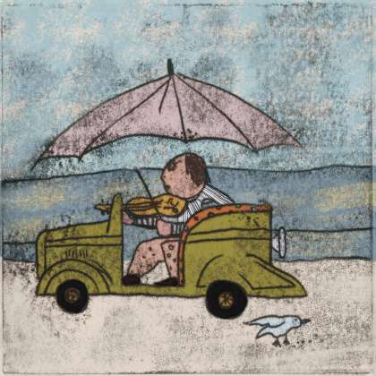

白日梦
镜头下

Sotto lo sguardo dei sogni diurni
Il libro, riaperto重新打开的书
I sogni a occhi aperti durano quanto un semaforo rosso o una fermata di autobus. Poi la giornata riprende e non ne resta quasi niente. Le quarantotto lastre di Lin Junnan provano a trattenere proprio quel quasi niente. Il titolo cinese, 白日梦镜头下, alla lettera suona «sotto la lente del sogno a occhi aperti»: 镜头 vuol dire obiettivo fotografico, e nel libro il sogno diurno fa da lente, mentre la realtà è quello che ci passa attraverso.
Cani in piedi sulle nuvole. Case che traslocano su un carretto. Un sole chiuso dentro una valigia, un pesce che accompagna un bambino lungo un sentiero di montagna. Nessuna di queste immagini viene spiegata, e nessuna ha bisogno di esserlo. La lavorazione invece è lentissima: l'acido resta sul rame per ore, la resina dell'acquatinta riempie i fondi di grana. Quello che sembra un disegno buttato giù in dieci secondi ha passato in bagno chimico un pomeriggio intero.
Accanto alle immagini stanno quattro poesie di Chen Xinze, scritte quasi tutte di notte, quando il sogno a occhi aperti si rovescia e tornano il grigio e l'insonnia. Non sono nate per questo libro: è Chen Xinze ad averle messe accanto alle lastre di Lin Junnan, una per una, e l'accostamento è la parte del progetto che appartiene a lui.
Questo sito tiene insieme le due cose, in cinese e in italiano, e cerca di far leggere i versi con la stessa attenzione con cui si guardano le lastre. La traduzione ha una colonna sua, larga quanto quella dell'originale.
白日梦大约只有一个红灯、一站路那么长。白天一回来，几乎什么都不剩。 Lin Junnan 的四十八块铜版，想留住的正是那"几乎什么都不剩"。 中文书名《白日梦镜头下》里的"镜头"就是照相机的镜头：在这本书里，白日梦是镜头，现实是从中穿过的东西。
站在云上的狗。坐着小车搬家的房子。装进行李箱的太阳，陪孩子走山路的鱼。画面从不解释自己。 工艺却慢得出奇：酸在铜版上停留数小时，飞尘的松香把底色填满颗粒。 看上去十秒钟画完的线，其实在药水里泡了一个下午。
图像旁边是 Chen Xinze 的四首诗，多半写于夜间；白日梦在那里翻转过来， 灰色和失眠回来了。这些诗并非为这本书而写：是 Chen Xinze 把它们逐一放在 Lin Junnan 的铜版旁边， 而这一层并置正是属于他的那部分工作。
这个网站把两者放在同一处，中文与意大利文并列， 希望读诗的注意力和看版画的注意力一样多。译文有自己的一栏，宽度与原文相同。
Sei lastre, a caso六幅作品


Dalla seconda sezione选自第二部分
夜间独白千疮百孔的琴箱上 开出了花 闹钟响起 击碎了所有
Monologo notturnoSulla cassa armonica piena di ferite è sbocciato un fiore. Suona la sveglia: manda in frantumi tutto.